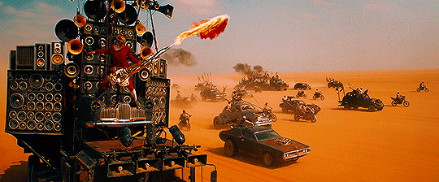

Mad Max: Estrada da Fúria" é um filme de ação pós-apocalíptico dirigido por George Miller, lançado em 2015. O enredo se desenrola em um mundo desolado e caótico, onde recursos são escassos e sociedades colapsaram. O protagonista, Max Rockatansky (interpretado por Tom Hardy), encontra-se capturado por um grupo chamado "Os Filhos da Guerra" e é usado como fonte de sangue. Furiosa (interpretada por Charlize Theron), uma guerreira, planeja escapar com um grupo de mulheres cativas, levando-as para longe do líder tirânico, Immortan Joe. A trama se desenrola em uma perseguição espetacular através de um deserto pós-apocalíptico. Max e Furiosa se unem para escapar da tirania de Immortan Joe, que controla recursos vitais, incluindo água e gasolina. O filme é conhecido por suas cenas de ação intensas, perseguições de veículos altamente estilizadas e personagens icônicos. A temática central envolve a luta pela liberdade, a busca por recursos essenciais e a resistência contra a opressão em um mundo onde a civilização desmoronou. "Mad Max: Estrada da Fúria" recebeu aclamação crítica por sua cinematografia inovadora, direção habilidosa e representação visual impressionante do mundo pós-apocalíptico. Além disso, Charlize Theron recebeu elogios por sua interpretação poderosa de Furiosa, e o filme conquistou vários prêmios, incluindo seis Oscars.
Na narrativa de "Mad Max: Estrada da Fúria", os "Garotos de Guerra" têm uma relação direta com Immortan Joe, o líder tirânico da Cidadela, onde se desenrola a maior parte da história. Os Garotos de Guerra são os seguidores leais e fanáticos de Immortan Joe, compostos principalmente por jovens guerreiros que o veneram quase como uma figura divina. Immortan Joe lidera a Cidadela, uma sociedade pós-apocalíptica onde o controle de recursos, especialmente água, é centralizado em suas mãos. Ele é retratado como um líder opressor, que mantém seu poder não apenas por meio da força militar, mas também pela adoração fanática dos Garotos de Guerra. A relação entre Immortan Joe e os Garotos de Guerra é baseada em um sistema de culto e controle. Eles o seguem fervorosamente, acreditando que ele detém o poder divino sobre suas vidas e, em troca, eles têm a promessa de um lugar no "Valhalla", uma espécie de paraíso pós-morte. Os Garotos de Guerra são utilizados como força militar e, em alguns casos, são submetidos a práticas brutais, como a extração de sangue para ser usado como recurso. A relação entre Immortan Joe e os Garotos de Guerra é um reflexo do controle totalitário e da exploração brutal que caracterizam o mundo pós-apocalíptico de "Mad Max: Estrada da Fúria".